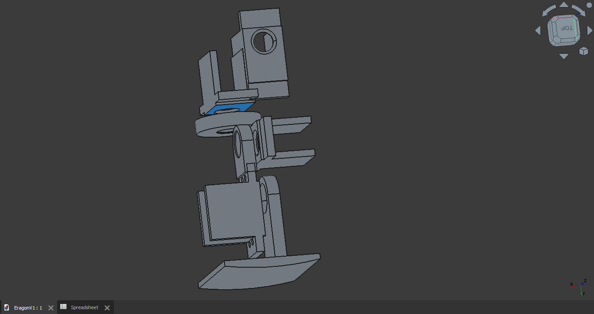
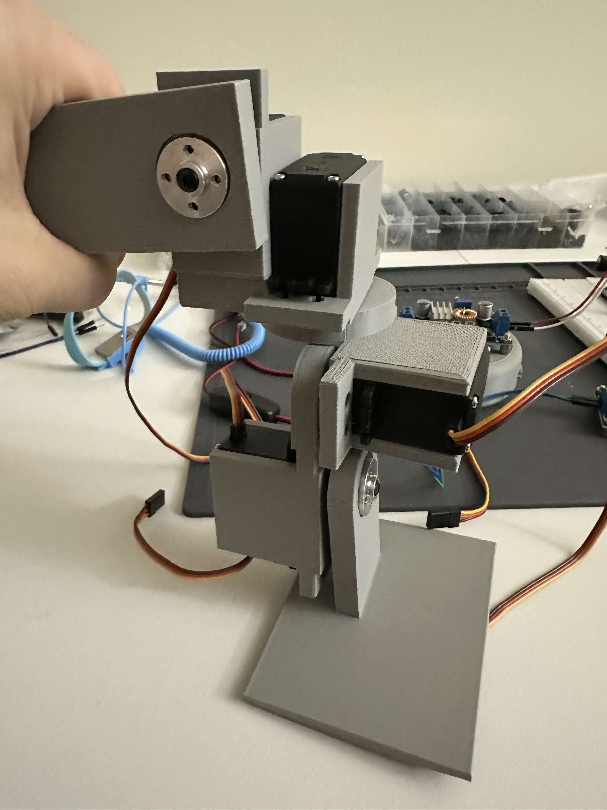

Eragon is a compact, mostly 3D-printed bipedal walking robot standing approximately 30 cm (1 ft) tall. Built as an advanced, hands-on engineering platform, this project focuses on servo control, basic gait generation, balance feedback loops, and physical mechanical/electrical integration.
| Component | Value / Technology |
|---|---|
| Microcontroller | ESP32 (Dual-Core) |
| Actuators | MG996R High-Torque Servos |
| RTOS | FreeRTOS (Task Management) |
| CAD Software | FreeCAD |
| Sensors | IMU Balance Feedback |
The engineering layout balances physical hardware limitations with processing performance:
Following the complete hardware assembly and physical integration of the MK1 platform, the project strategy pivoted toward virtual modeling.
Current Status: Actively transitioning the development track into a Digital Twin simulation space within Isaac Sim. This allows for safe, high-fidelity gait training, physics evaluation, and reinforcement learning optimization before flashing updated control blocks back to the physical hardware.

